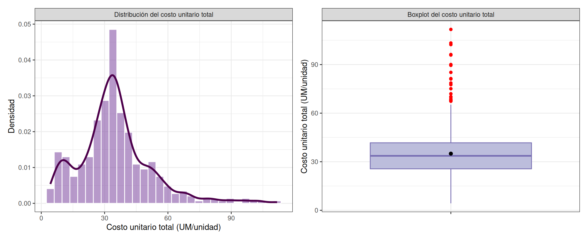
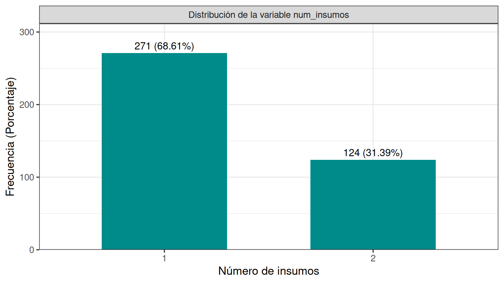
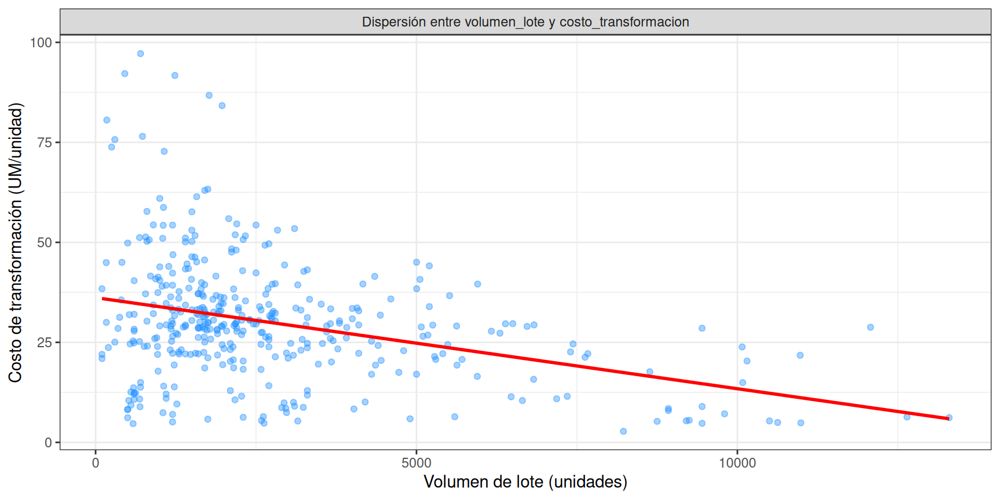
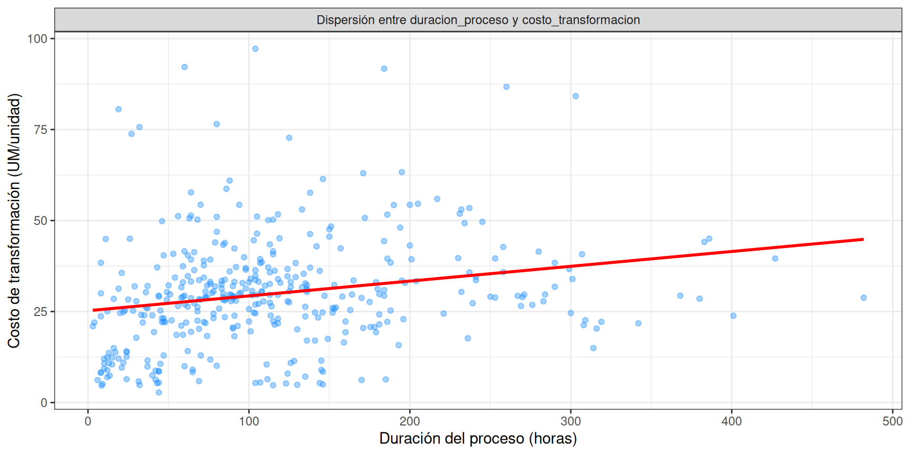
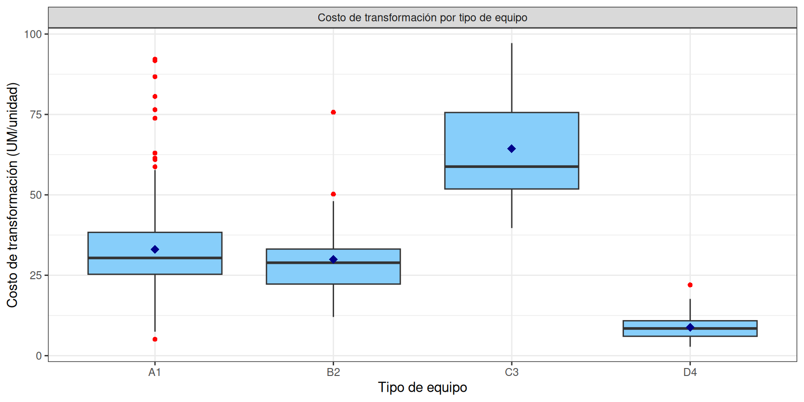
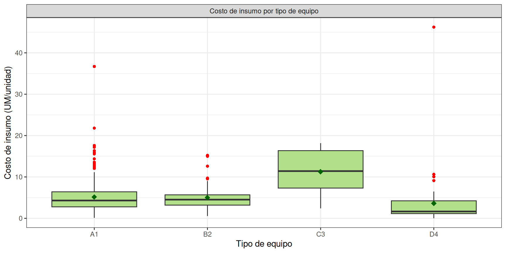
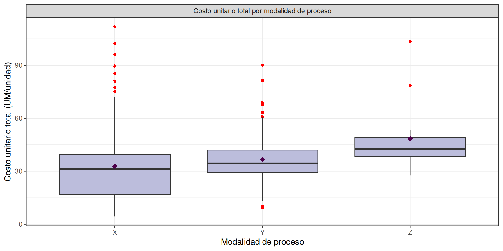
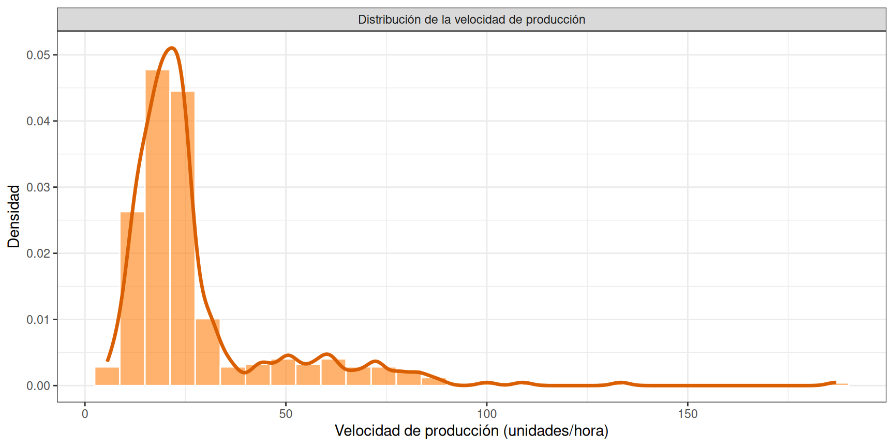

Capítulo 6 Análisis Exploratorio de Datos
El Análisis Exploratorio de Datos (EDA) busca dar una primera lectura al comportamiento de las variables del estudio, apoyándose tanto en resúmenes numéricos como en representaciones gráficas. A partir de esto, se pretende reconocer cómo varían los datos, ubicar posibles valores atípicos y, sobre todo, plantear hipótesis que después puedan examinarse con mayor rigor en el análisis inferencial. ## Carga del dataset analítico
Se carga el dataset depurado y con tipos ajustados. El archivo RDS preserva los factores, el factor ordenado num_insumos y la recodificación de insumo_2, de modo que este capítulo puede ejecutarse de forma autónoma.
library(tidyverse)
library(patchwork)
library(gridExtra)
library(knitr)
library(kableExtra)
datos <- readRDS("data/data_costos_limpio.rds")El dataset analítico contiene 395 órdenes de producción y 16 variables.
6.1 Análisis univariado de los costos
Las tres variables respuesta del estudio son costo_transformacion (costo de conversión por unidad producida), costo_insumo (costo de materias primas por unidad producida) y su agregado costo_unitario_total. Se analizan en paralelo porque responden a lógicas operativas distintas: el costo de transformación refleja eficiencia de máquina y proceso, mientras que el costo de insumo refleja decisiones de formulación y consumo de materias primas.
6.1.1 costo_transformacion
datos %>%
summarise(
n = length(costo_transformacion),
media = mean(costo_transformacion),
ds = sd(costo_transformacion),
`50%` = median(costo_transformacion),
minimo = min(costo_transformacion),
maximo = max(costo_transformacion),
Q1 = quantile(costo_transformacion, 0.25),
Q3 = quantile(costo_transformacion, 0.75),
IQR = IQR(costo_transformacion)
) -> resumen_ct
knitr::kable(resumen_ct, caption = "Resumen del costo de transformacion") %>%
kableExtra::kable_styling(full_width = FALSE) | n | media | ds | 50% | minimo | maximo | Q1 | Q3 | IQR |
|---|---|---|---|---|---|---|---|---|
| 395 | 29.93986 | 15.25873 | 29.0901 | 2.76611 | 97.1848 | 21.90816 | 36.44523 | 14.53708 |
La variable costo_transformacion se analizó a partir de 395 órdenes de producción.
Se obtuvo un costo medio de conversión por unidad de 29.94 UM/unidad (DS = 15.26 UM/unidad), con un coeficiente de variación de 51%. El 50% de las órdenes presenta un costo de conversión por debajo de 29.09 UM/unidad.
La desviación estándar alcanza 15.26, lo que equivale a un coeficiente de variación de 51%. Quiere decir que los costos fluctúan de manera importante respecto al promedio.
El rango intercuartílico (14.54) indica que la mitad central de los datos se sitúa en un intervalo relativamente acotado, lo que describe el comportamiento típico del proceso.
Sin embargo, los extremos revela algo distinto. Mientras el valor mínimo (2.77) se mantiene dentro de lo esperado, el máximo (97.18) se encuentra considerablemente alejado del resto. Este comportamiento puede sugerir la presencia de valores atípicos en la parte superior de la distribución, generando una cola hacia la derecha.
En términos prácticos, esto significa que la mayoría de los procesos operan en niveles de costo relativamente estables, pero existen casos puntuales significativamente más costosos. Estos valores extremos pueden responder a procesos más complejos o a posibles inconsistencias en los datos, por lo que requieren un análisis específico antes de su inclusión en modelos o decisiones operativas.
library(dplyr)
library(ggplot2)
library(tibble)
lineas <- tibble(
estadistico = c("Media", "Mediana", "Q1", "Q3"),
valor = c(
resumen_ct$media,
resumen_ct$`50%`,
as.numeric(resumen_ct$Q1),
as.numeric(resumen_ct$Q3)
)
)
p_hist_cc<-datos %>%
ggplot(aes(x = costo_transformacion)) +
geom_histogram(aes(y = after_stat(density)),
bins = 30,
fill = "#ACAEAF",
color = "#616161",
alpha = 0.6) +
geom_density(linewidth = 1.2) +
geom_vline(data = lineas,
aes(xintercept = valor, color = estadistico, linetype = estadistico),
linewidth = 0.9) +
scale_color_manual(values = c(
"Media" = "#551196",
"Mediana" = "#1a9850",
"Q1" = "#f46d43",
"Q3" = "#a71c1c"
)) +
scale_linetype_manual(values = c(
"Media" = "longdash",
"Mediana" = "longdash",
"Q1" = "dotted",
"Q3" = "dotted"
)) +
labs(x = "Costo de transformación (UM/unidad)",
y = "Densidad",
color = "Estadístico",
linetype = "Estadístico") +
theme_bw() +
theme(legend.position = "right") +
facet_grid(. ~ "Distribución del costo de transformación")
p_box_cc<-datos %>%
ggplot(aes(x = "", y = costo_transformacion)) +
geom_boxplot(fill = "#ACAEAF", color = "#616161", outlier.color = "red") +
stat_summary(fun = mean, geom = "point", shape = 20, size = 3, color = "black") +
labs(x = "",
y = "Costo de transformación (UM/unidad)") +
theme_bw() +
facet_grid(. ~ "Boxplot del costo de transformación")
p_hist_cc + p_box_cc
El histograma confirma lo observado en las estadísticas descriptivas. El núcleo de la distribución se concentra claramente alrededor de r round(ct_media,2), con una densidad máxima cercana a los 25–30 UM. Esta región coincide con la mediana (r round(ct_med,2)) y el rango intercuartílico, lo que indica que el comportamiento típico del proceso está bien definido y es relativamente estable.
Sin embargo, la forma de la distribución no es simétrica. Se observa una cola derecha prolongada, que se extiende hasta valores cercanos a r round(ct_max,0). Esta asimetría implica que, aunque la mayoría de los costos son moderados, existe una proporción pequeña de observaciones con costos significativamente más altos.
Adicionalmente, aparece un leve segundo abultamiento en valores bajos (≈ 5–15 UM). Esto sugiere la posible existencia de subgrupos dentro del proceso, es decir, no todos los registros provienen del mismo mecanismo generador de costos. Podrían coexistir:
procesos simples o de baja complejidad (costos bajos) procesos estándar (zona central) procesos excepcionales o más complejos (cola derecha)
Desde una perspectiva de modelado, esto tiene implicaciones claras:
La distribución no es normal → modelos que asumen normalidad pueden ser inadecuados. La cola derecha puede influir fuertemente en estimaciones basadas en la media. La posible multimodalidad sugiere heterogeneidad no explicada → variables como tipo de equipo, producto o modalidad de proceso pueden estar segmentando el comportamiento.
En términos operativos, el sistema no solo presenta variabilidad, sino también estructura interna: no es un proceso homogéneo, sino una mezcla de dinámicas distintas que conviene separar antes de cualquier inferencia o optimización.
El histograma y el boxplot evidencian una distribución asimétrica hacia valores altos, con presencia de órdenes extremas que se destacan sobre el bigote superior. La distancia entre la media y el 50% sugiere que la media está influida por la cola derecha, por lo que los análisis inferenciales posteriores deben contemplar transformaciones o pruebas robustas. El bigote superior se extiende hasta un cierto punto, pero inmediatamente aparecen múltiples observaciones por encima, marcadas en rojo. Estos son outliers superiores, y no son pocos ni aislados: forman un grupo visible. Existe una subpoblación de costos altos. Es decir no son casos extremos que sean puntuales. En contraste, en la parte inferior no se observan outliers relevantes. El mínimo está dentro del rango esperado El boxplot no solo confirma la dispersión, sino que evidencia que el fenómeno clave no es la variabilidad general, sino la existencia de una dinámica diferenciada en costos altos, que requiere segmentación o modelado específico.
6.1.2 costo_insumo
datos %>%
summarise(
n = length(costo_insumo),
media = mean(costo_insumo),
ds = sd(costo_insumo),
`50%` = median(costo_insumo),
minimo = min(costo_insumo),
maximo = max(costo_insumo),
Q1 = quantile(costo_insumo, 0.25),
Q3 = quantile(costo_insumo, 0.75),
IQR = IQR(costo_insumo)
) -> resumen_ci
knitr::kable(resumen_ci, caption = "Resumen del costo de insumo") %>%
kableExtra::kable_styling(full_width = FALSE) | n | media | ds | 50% | minimo | maximo | Q1 | Q3 | IQR |
|---|---|---|---|---|---|---|---|---|
| 395 | 5.048482 | 4.419278 | 4.184607 | 0.0136519 | 46.21884 | 2.427897 | 6.211323 | 3.783426 |
El costo de insumo promedio es de 5.05 UM/unidad (DS = 4.42 UM/unidad), con un coeficiente de variación de 87.5%. El 50% de las órdenes tiene un costo de insumo por debajo de 4.18 UM/unidad, con un mínimo de 0.01 y un máximo de 46.22 UM/unidad. El rango intercuartílico es de 3.78 UM/unidad. El comportamiento típico se concentra en valores bajos. La mayoría de los insumos se ubican en niveles reducidos de costo, mientras que la media (r round(ci_media,2)) es superior, lo que evidencia la influencia de valores más altos sobre el promedio. Esta diferencia confirma una asimetría positiva: pocos insumos concentran costos considerablemente mayores. El rango intercuartílico (r round(ci_iqr,2)) delimita el comportamiento típico: el 50% central de los costos se sitúa en un intervalo relativamente acotado, lo que sugiere que existe un conjunto dominante de insumos de bajo costo. Sin embargo, este núcleo convive con una cola derecha extensa. En resumen: - comportamiento homogéneo - un grupo mayoritario de insumos de bajo costo - un conjunto reducido de insumos de costo medio - pocos insumos de alto impacto económico
lineas <- tibble(
estadistico = c("Media", "Mediana", "Q1", "Q3"),
valor = c(
resumen_ci$media,
resumen_ci$`50%`,
as.numeric(resumen_ci$Q1),
as.numeric(resumen_ci$Q3)
)
)
p_hist_ci <- datos %>%
ggplot(aes(x = costo_insumo)) +
geom_histogram(aes(y = after_stat(density)),
bins = 30,
fill = "#ACAEAF",
color = "#616161",
alpha = 0.6) +
geom_density(color = "darkgreen", linewidth = 1.2) +
geom_vline(data = lineas,
aes(xintercept = valor, color = estadistico, linetype = estadistico),
linewidth = 0.9) +
scale_color_manual(values = c(
"Media" = "#551196",
"Mediana" = "#1a9850",
"Q1" = "#f46d43",
"Q3" = "#a71c1c"
)) +
scale_linetype_manual(values = c(
"Media" = "longdash",
"Mediana" = "longdash",
"Q1" = "dotted",
"Q3" = "dotted"
)) +
labs(x = "Costo de insumo (UM/unidad)",
y = "Densidad",
color = "Estadístico",
linetype = "Estadístico") +
theme_bw() +
theme(legend.position = "right") +
facet_grid(. ~ "Distribución del costo de insumo")
p_box_ci <- datos %>%
ggplot(aes(x = "", y = costo_insumo)) +
geom_boxplot(fill = "#ACAEAF", color = "#616161", outlier.color = "red") +
stat_summary(fun = mean, geom = "point", shape = 20, size = 3, color = "black") +
labs(x = "", y = "Costo de insumo (UM/unidad)") +
theme_bw() +
facet_grid(. ~ "Boxplot del costo de insumo")
p_hist_ci + p_box_ci
6.1.3 costo_unitario_total
La variable costo_unitario_total se deriva como la suma de costo_transformacion y costo_insumo, y representa el costo total por unidad de producto.
datos %>%
summarise(
n = length(costo_unitario_total),
media = mean(costo_unitario_total),
ds = sd(costo_unitario_total),
`50%` = median(costo_unitario_total),
minimo = min(costo_unitario_total),
maximo = max(costo_unitario_total),
Q1 = quantile(costo_unitario_total, 0.25),
Q3 = quantile(costo_unitario_total, 0.75),
IQR = IQR(costo_unitario_total)
) -> resumen_ctot
knitr::kable(resumen_ctot, caption = "Resumen del costo unitario total") %>%
kableExtra::kable_styling(full_width = FALSE) | n | media | ds | 50% | minimo | maximo | Q1 | Q3 | IQR |
|---|---|---|---|---|---|---|---|---|
| 395 | 34.98835 | 17.28567 | 33.63643 | 4.301429 | 111.7165 | 25.60903 | 41.68937 | 16.08034 |
El costo unitario total promedio es de 34.99 UM/unidad , la cercanía relativa entre ambas indica que, aunque existe asimetría, el núcleo del sistema está bien definido. Sin embargo, la media se mantiene por encima de la mediana, lo que confirma la presencia de una cola derecha.. Un coeficiente de variación de 49.4% (DS = 17.29), la variabilidad del costo total no es despreciable . De este promedio, el 85.6% corresponde al costo de transformación y el 14.4% al costo de insumo. El 50% de las órdenes presenta un costo unitario total por debajo de 33.64 UM/unidad, con un rango entre 4.3 y 111.72. El boxplot confirma la presencia de outliers superiores múltiples, no aislados. Estos valores altos no corresponden a ruido aleatorio, sino a una fracción del sistema que sistemáticamente incurre en costos elevados.
Desde la descomposición del costo total:
El costo de transformación representa aproximadamente r prop_ct% del total El costo de insumos representa aproximadamente r prop_ci%
Esto implica que el componente dominante del costo total es el proceso de transformación, mientras que los insumos, aunque más variables, tienen menor peso relativo en el agregado.
Interpretación estructural:
Existe un núcleo estable de costos totales, bien representado por la mediana y el IQR. La variabilidad del sistema está influida por eventos de alto costo, principalmente en la cola derecha. El costo total hereda la asimetría de sus componentes, pero la amplifica al agregarlos.
Lectura final:
El sistema productivo opera mayoritariamente en un rango de costos relativamente estable, pero está condicionado por una fracción de casos con costos significativamente más altos. Estos casos no son marginales y deben interpretarse como parte de la estructura del proceso, no como anomalías aisladas. La clave analítica no está en el promedio, sino en entender qué condiciones generan esos costos elevados y cómo se relacionan con los componentes del costo total.
lineas <- tibble(
estadistico = c("Media", "Mediana", "Q1", "Q3"),
valor = c(
resumen_ctot$media,
resumen_ctot$`50%`,
as.numeric(resumen_ctot$Q1),
as.numeric(resumen_ctot$Q3)
)
)
p_hist_ct <- datos %>%
ggplot(aes(x = costo_unitario_total)) +
geom_histogram(aes(y = after_stat(density)),
bins = 30,
fill = "#ACAEAF",
color = "white",
alpha = 0.6) +
geom_density(color = "#4d004b", linewidth = 1.2) +
geom_vline(data = lineas,
aes(xintercept = valor, color = estadistico, linetype = estadistico),
linewidth = 0.9) +
scale_color_manual(values = c(
"Media" = "#551196",
"Mediana" = "#1a9850",
"Q1" = "#f46d43",
"Q3" = "#a71c1c"
)) +
scale_linetype_manual(values = c(
"Media" = "longdash",
"Mediana" = "longdash",
"Q1" = "dotted",
"Q3" = "dotted"
)) +
labs(x = "Costo unitario total (UM/unidad)",
y = "Densidad",
color = "Estadístico",
linetype = "Estadístico") +
theme_bw() +
theme(legend.position = "right") +
facet_grid(. ~ "Distribución del costo unitario total")
p_box_ct <- datos %>%
ggplot(aes(x = "", y = costo_unitario_total)) +
geom_boxplot(fill = "#ACAEAF", color = "#616161", outlier.color = "red") +
stat_summary(fun = mean, geom = "point", shape = 20, size = 3, color = "black") +
labs(x = "", y = "Costo unitario total (UM/unidad)") +
theme_bw() +
facet_grid(. ~ "Boxplot del costo unitario total")
p_hist_ct + p_box_ct
El costo unitario total hereda la asimetría de sus dos componentes. La estructura de costos está dominada por el componente de transformación, que representa aproximadamente 85.6% del costo total promedio, frente al 14.4% del costo de insumo.
6.2 Análisis univariado de variables numéricas predictoras
Las variables numéricas predictoras son volumen_lote, duracion_proceso, cantidad_insumo_1 y cantidad_insumo_2. Para las cantidades de insumo, los estadísticos descriptivos se calculan condicionando sobre la presencia efectiva del insumo correspondiente, conforme a la advertencia estructural documentada en el capítulo de metodología.
datos %>%
summarise(
n = length(volumen_lote),
media = mean(volumen_lote),
ds = sd(volumen_lote),
`50%` = median(volumen_lote),
minimo = min(volumen_lote),
maximo = max(volumen_lote),
Q1 = quantile(volumen_lote, 0.25),
Q3 = quantile(volumen_lote, 0.75),
IQR = IQR(volumen_lote)
) %>%
mutate(variable = "volumen_lote") -> var_num_vol
datos %>%
summarise(
n = length(duracion_proceso),
media = mean(duracion_proceso),
ds = sd(duracion_proceso),
`50%` = median(duracion_proceso),
minimo = min(duracion_proceso),
maximo = max(duracion_proceso),
Q1 = quantile(duracion_proceso, 0.25),
Q3 = quantile(duracion_proceso, 0.75),
IQR = IQR(duracion_proceso)
) %>%
mutate(variable = "duracion_proceso") -> var_num_dur
datos %>%
filter(num_insumos >= 1) %>%
summarise(
n = length(cantidad_insumo_1),
media = mean(cantidad_insumo_1),
ds = sd(cantidad_insumo_1),
`50%` = median(cantidad_insumo_1),
minimo = min(cantidad_insumo_1),
maximo = max(cantidad_insumo_1),
Q1 = quantile(cantidad_insumo_1, 0.25),
Q3 = quantile(cantidad_insumo_1, 0.75),
IQR = IQR(cantidad_insumo_1)
) %>%
mutate(variable = "cantidad_insumo_1") -> var_num_ci1
datos %>%
filter(num_insumos == 2) %>%
summarise(
n = length(cantidad_insumo_2),
media = mean(cantidad_insumo_2),
ds = sd(cantidad_insumo_2),
`50%` = median(cantidad_insumo_2),
minimo = min(cantidad_insumo_2),
maximo = max(cantidad_insumo_2),
Q1 = quantile(cantidad_insumo_2, 0.25),
Q3 = quantile(cantidad_insumo_2, 0.75),
IQR = IQR(cantidad_insumo_2)
) %>%
mutate(variable = "cantidad_insumo_2") -> var_num_ci2
resumen_num_predictoras <- bind_rows(var_num_vol, var_num_dur, var_num_ci1, var_num_ci2) %>%
select(variable, everything())%>%
mutate(across(where(is.numeric) & !n, ~ round(.x, 2)))
knitr::kable(resumen_num_predictoras, caption = "Resumen descriptivo de las variables numéricas seleccionadas") %>%
kableExtra::kable_styling(full_width = FALSE) | variable | n | media | ds | 50% | minimo | maximo | Q1 | Q3 | IQR |
|---|---|---|---|---|---|---|---|---|---|
| volumen_lote | 395 | 2739.03 | 2346.76 | 1989 | 100.00 | 13300 | 1226.00 | 3289 | 2063.00 |
| duracion_proceso | 395 | 115.79 | 82.59 | 100 | 3.00 | 482 | 60.00 | 150 | 90.00 |
| cantidad_insumo_1 | 395 | 2.29 | 1.90 | 2 | 0.05 | 14 | 1.00 | 3 | 2.00 |
| cantidad_insumo_2 | 124 | 1.43 | 1.08 | 1 | 0.05 | 7 | 0.75 | 2 | 1.25 |
El resumen conjunto permite leer la estructura operativa del sistema en términos de escala (volumen), intensidad (tiempo) y consumo (insumos). No son variables independientes: describen distintas dimensiones del mismo proceso productivo.
Volumen de lote, es la variable más heterogénea. La media supera claramente a la mediana, lo que indica asimetría positiva. El rango es muy amplio (100 a 13300) y el IQR (2063) es elevado, señal de que incluso el comportamiento “típico” presenta alta dispersión. el proceso opera con lotes muy dispares, dependiendo de los pedidos de los clientes , el proceso es make to order. No hay un tamaño estándar dominante. Duración del proceso, es heterogéneo también pero más controlado. La media es superior a la mediana, nuevamente cola derecha. El IQR muestra que la mitad de los procesos se concentra entre 60 y 150 horas, lo que define un rango operativo razonablemente estable. Sin embargo, el máximo de 482 horas apunta a procesos excepcionalmente largos. Cantidad de insumo 1, comportamiento más discreto y concentrado. La mediana es 2 y el IQR es 2, lo que indica que la mayoría de los casos utiliza entre 1 y 3 unidades. La media (2.29) ligeramente superior a la mediana sugiere algunos valores altos, pero sin una dispersión extrema. Esta variable refleja un consumo relativamente estable y predecible, con variaciones moderadas. Cantidad de insumo 2: Tiene menor número de observaciones, no todos las ordenes llevan insumo 2. Su mediana es 1 y el IQR es 1.25, lo que muestra una concentración aún mayor que en el insumo 1. La dispersión es baja y los valores extremos (máximo 7) son menos pronunciados. Esto sugiere que el segundo insumo actúa como un componente opcional o complementario, con consumo bajo y controlado.
La principal fuente de heterogeneidad no está en los insumos, sino en el tamaño de los lotes y la duración de los procesos. Esto sugiere que cualquier modelamiento o mejora operativa debe centrarse en segmentar por escala de producción y complejidad del proceso, más que en el consumo de insumos.
p_vol <- datos %>%
ggplot(aes(x = "", y = volumen_lote)) +
geom_boxplot(fill = "#1f77b4", alpha = 0.7) +
stat_summary(fun = mean, geom = "point", shape = 18, size = 4, color = "black") +
labs(title = "Distribución del volumen de lote", y = "Unidades", x = "") +
theme_bw()
p_dur <- datos %>%
ggplot(aes(x = "", y = duracion_proceso)) +
geom_boxplot(fill = "#2ca02c", alpha = 0.7) +
stat_summary(fun = mean, geom = "point", shape = 18, size = 4, color = "black") +
labs(title = "Distribución de la duración de proceso", y = "Horas", x = "") +
theme_bw()
p_ci1 <- datos %>%
filter(num_insumos >= 1) %>%
ggplot(aes(x = "", y = cantidad_insumo_1)) +
geom_boxplot(fill = "#ff7f0e", alpha = 0.7) +
stat_summary(fun = mean, geom = "point", shape = 18, size = 4, color = "black") +
labs(title = "Cantidad de insumo 1 (órdenes con insumo)",
y = "Litros equivalentes", x = "") +
theme_bw()
p_ci2 <- datos %>%
filter(num_insumos == 2) %>%
ggplot(aes(x = "", y = cantidad_insumo_2)) +
geom_boxplot(fill = "#9467bd", alpha = 0.7) +
stat_summary(fun = mean, geom = "point", shape = 18, size = 4, color = "black") +
labs(title = "Cantidad de insumo 2 (órdenes con segundo insumo)",
y = "Litros equivalentes", x = "") +
theme_bw()
(p_vol + p_dur) / (p_ci1 + p_ci2)
library(ggplot2)
library(dplyr)
library(patchwork)
p_vol_hist <- datos %>%
ggplot(aes(x = volumen_lote)) +
geom_histogram(aes(y = after_stat(density)),
bins = 30,
fill = "#1f77b4",
color = "white",
alpha = 0.7) +
geom_density(linewidth = 1.2) +
labs(title = "Distribución del volumen de lote",
x = "Unidades", y = "Densidad") +
theme_bw()
p_dur_hist <- datos %>%
ggplot(aes(x = duracion_proceso)) +
geom_histogram(aes(y = after_stat(density)),
bins = 30,
fill = "#2ca02c",
color = "white",
alpha = 0.7) +
geom_density(linewidth = 1.2) +
labs(title = "Distribución de la duración de proceso",
x = "Horas", y = "Densidad") +
theme_bw()
p_ci1_hist <- datos %>%
filter(num_insumos >= 1) %>%
ggplot(aes(x = cantidad_insumo_1)) +
geom_histogram(aes(y = after_stat(density)),
bins = 25,
fill = "#ff7f0e",
color = "white",
alpha = 0.7) +
geom_density(linewidth = 1.2) +
labs(title = "Cantidad de insumo 1 (órdenes con insumo)",
x = "Litros equivalentes", y = "Densidad") +
theme_bw()
p_ci2_hist <- datos %>%
filter(num_insumos == 2) %>%
ggplot(aes(x = cantidad_insumo_2)) +
geom_histogram(aes(y = after_stat(density)),
bins = 20,
fill = "#9467bd",
color = "white",
alpha = 0.7) +
geom_density(linewidth = 1.2) +
labs(title = "Cantidad de insumo 2 (órdenes con segundo insumo)",
x = "Litros equivalentes", y = "Densidad") +
theme_bw()
(p_vol_hist + p_dur_hist) / (p_ci1_hist + p_ci2_hist)
Visualmente, la fuente real de heterogeneidad no está en los insumos, sino en cómo y cuánto se produce. Esto implica que cualquier análisis o modelo que ignore la escala (volumen) o la complejidad (duración) va a estar mal especificado.
6.3 Análisis univariado de variables categóricas predictoras
vars_cat <- c("tipo_equipo", "equipo_id", "categoria_producto",
"modalidad_proceso", "num_insumos", "insumo_1", "insumo_2")
tabla_cat <- map_dfr(vars_cat, function(v) {
datos %>%
count(.data[[v]], name = "Frecuencia") %>%
mutate(
Porcentaje = (Frecuencia / sum(Frecuencia)) * 100,
Variable = v,
Categoria = as.character(.data[[v]])
) %>%
select(Variable, Categoria, Frecuencia, Porcentaje)
}) %>%
mutate(Porcentaje = round(Porcentaje, 2))
knitr::kable(tabla_cat, caption = "Resumen descriptivo de las variables categóricas seleccionadas") %>%
kableExtra::kable_styling(full_width = FALSE) | Variable | Categoria | Frecuencia | Porcentaje |
|---|---|---|---|
| tipo_equipo | A1 | 287 | 72.66 |
| tipo_equipo | B2 | 45 | 11.39 |
| tipo_equipo | C3 | 8 | 2.03 |
| tipo_equipo | D4 | 55 | 13.92 |
| equipo_id | M02 | 45 | 11.39 |
| equipo_id | M04 | 4 | 1.01 |
| equipo_id | M05 | 31 | 7.85 |
| equipo_id | M08 | 34 | 8.61 |
| equipo_id | M09 | 40 | 10.13 |
| equipo_id | M11 | 4 | 1.01 |
| equipo_id | M12 | 24 | 6.08 |
| equipo_id | M13 | 36 | 9.11 |
| equipo_id | M14 | 43 | 10.89 |
| equipo_id | M15 | 43 | 10.89 |
| equipo_id | M16 | 46 | 11.65 |
| equipo_id | M17 | 45 | 11.39 |
| categoria_producto | 1 | 9 | 2.28 |
| categoria_producto | 2 | 9 | 2.28 |
| categoria_producto | 3 | 74 | 18.73 |
| categoria_producto | 4 | 30 | 7.59 |
| categoria_producto | 5 | 246 | 62.28 |
| categoria_producto | 6 | 1 | 0.25 |
| categoria_producto | 7 | 26 | 6.58 |
| modalidad_proceso | X | 206 | 52.15 |
| modalidad_proceso | Y | 175 | 44.30 |
| modalidad_proceso | Z | 14 | 3.54 |
| num_insumos | 1 | 271 | 68.61 |
| num_insumos | 2 | 124 | 31.39 |
| insumo_1 | A_T | 38 | 9.62 |
| insumo_1 | B_T | 173 | 43.80 |
| insumo_1 | N_O | 43 | 10.89 |
| insumo_1 | N_T | 114 | 28.86 |
| insumo_1 | R_T | 12 | 3.04 |
| insumo_1 | V_T | 15 | 3.80 |
| insumo_2 | A_T | 20 | 5.06 |
| insumo_2 | B_T | 15 | 3.80 |
| insumo_2 | N_O | 23 | 5.82 |
| insumo_2 | N_T | 27 | 6.84 |
| insumo_2 | R_T | 25 | 6.33 |
| insumo_2 | sin_segundo_insumo | 271 | 68.61 |
| insumo_2 | V_T | 14 | 3.54 |
Tipo de equipo: La categoría A1 concentra el 72.7% de las observaciones. El sistema opera mayoritariamente sobre un solo tipo de equipo. Las demás categorías (B2, D4, C3) tienen participaciones mucho menores, lo que implica posible sesgo en análisis globales si no se segmenta y riesgo de conclusiones dominadas por A1. C3 (2.03%) es prácticamente marginal. Equipo específico (equipo_id): Distribución es más fragmentada, pero aún desigual. algunos equipos concentran entre 8% y 11% (M02, M09, M08), otros son casi irrelevantes (~1%) El sistema no es balanceado, fuerte concentración en tipo A1 Existe heterogeneidad operativa, → distintos equipos tienen niveles de uso muy distintos Cualquier modelo debe considerar tipo_equipo como variable explicativa clave, equipo_id puede capturar efectos más finos (variabilidad intra-tipo) , Comparaciones entre categorías pequeñas pueden ser inestables (bajo n)
El sistema está estructurado alrededor de un tipo dominante (A1) y un subconjunto reducido de equipos con alta actividad. La variabilidad observada en costos, duración o volumen probablemente está condicionada por esta estructura, no solo por aleatoriedad.
El tipo de equipo dominante es A1, que concentra el 72.66% de las órdenes. La variable equipo_id tiene 12 niveles distintos y categoria_producto tiene 7 niveles, lo cual exigirá tratamiento cuidadoso en los análisis inferenciales posteriores para evitar celdas con pocas observaciones.
tabla_ni <- tabla_cat %>%
filter(Variable == "num_insumos") %>%
mutate(Etiqueta = paste0(Frecuencia, " (", Porcentaje, "%)"))
tabla_ni %>%
ggplot(aes(x = Categoria, y = Frecuencia)) +
geom_col(fill = "#008B8B", width = 0.6) +
geom_text(aes(label = Etiqueta), vjust = -0.5, size = 4) +
scale_y_continuous(expand = expansion(mult = c(0, 0.15))) +
labs(x = "Número de insumos", y = "Frecuencia (Porcentaje)") +
theme_bw(base_size = 13) +
facet_wrap(~ "Distribución de la variable num_insumos")
library(dplyr)
library(ggplot2)
# 1. Preparación de etiquetas para todas las variables
tabla_plot <- tabla_cat %>%
mutate(Etiqueta = paste0(Frecuencia, " (", Porcentaje, "%)"))
# 2. Generación del gráfico facetado (2 columnas x 4 filas)
ggplot(tabla_plot, aes(x = Categoria, y = Frecuencia)) +
geom_col(fill = "#008B8B", width = 0.6) +
geom_text(aes(label = Etiqueta), vjust = -0.5, size = 3.5) +
scale_y_continuous(expand = expansion(mult = c(0, 0.2))) +
labs(
x = "Categoría",
y = "Frecuencia",
title = "Distribución de Variables Categóricas"
) +
theme_bw(base_size = 12) +
theme(
axis.text.x = element_text(angle = 45, hjust = 1),
strip.background = element_rect(fill = "#2c3e50"),
strip.text = element_text(color = "white", fontface = "bold")
) +
# Facetado dinámico: 2 columnas, escalas independientes para cada eje X
facet_wrap(~ Variable, ncol = 2, scales = "free")
La construcción de los gráficos de barras para las variables categóricas restantes (equipo_id, categoria_producto, insumo_1, insumo_2) se deja como ejercicio, empleando el mismo patrón de geom_col con etiquetas.
6.4 Análisis bivariado: variables respuesta vs predictoras numéricas
6.4.1 Diagramas de dispersión
datos %>%
ggplot(aes(x = volumen_lote, y = costo_transformacion)) +
geom_point(alpha = 0.4, color = "#1E90FF") +
geom_smooth(method = "lm", formula = y ~ x, se = FALSE, color = "red") +
labs(x = "Volumen de lote (unidades)",
y = "Costo de transformación (UM/unidad)") +
theme_bw() +
facet_grid(. ~ "Dispersión entre volumen_lote y costo_transformacion")
datos %>%
ggplot(aes(x = duracion_proceso, y = costo_transformacion)) +
geom_point(alpha = 0.4, color = "#1E90FF") +
geom_smooth(method = "lm", formula = y ~ x, se = FALSE, color = "red") +
labs(x = "Duración del proceso (horas)",
y = "Costo de transformación (UM/unidad)") +
theme_bw() +
facet_grid(. ~ "Dispersión entre duracion_proceso y costo_transformacion")
6.4.2 Correlaciones
datos %>%
select(costo_transformacion, costo_insumo, costo_unitario_total,
volumen_lote, duracion_proceso,
cantidad_insumo_1, cantidad_insumo_2) %>%
cor(use = "pairwise.complete.obs", method = "pearson") %>%
round(3)## costo_transformacion costo_insumo costo_unitario_total
## costo_transformacion 1.000 0.344 0.971
## costo_insumo 0.344 1.000 0.560
## costo_unitario_total 0.971 0.560 1.000
## volumen_lote -0.350 -0.294 -0.384
## duracion_proceso 0.220 -0.087 0.172
## cantidad_insumo_1 -0.031 0.134 0.007
## cantidad_insumo_2 0.178 0.213 0.211
## volumen_lote duracion_proceso cantidad_insumo_1
## costo_transformacion -0.350 0.220 -0.031
## costo_insumo -0.294 -0.087 0.134
## costo_unitario_total -0.384 0.172 0.007
## volumen_lote 1.000 0.662 0.607
## duracion_proceso 0.662 1.000 0.670
## cantidad_insumo_1 0.607 0.670 1.000
## cantidad_insumo_2 0.093 0.339 0.367
## cantidad_insumo_2
## costo_transformacion 0.178
## costo_insumo 0.213
## costo_unitario_total 0.211
## volumen_lote 0.093
## duracion_proceso 0.339
## cantidad_insumo_1 0.367
## cantidad_insumo_2 1.000datos %>%
select(costo_transformacion, costo_insumo, costo_unitario_total,
volumen_lote, duracion_proceso,
cantidad_insumo_1, cantidad_insumo_2) %>%
cor(use = "pairwise.complete.obs", method = "spearman") %>%
round(3)## costo_transformacion costo_insumo costo_unitario_total
## costo_transformacion 1.000 0.361 0.961
## costo_insumo 0.361 1.000 0.547
## costo_unitario_total 0.961 0.547 1.000
## volumen_lote -0.269 -0.300 -0.318
## duracion_proceso 0.280 -0.031 0.222
## cantidad_insumo_1 0.019 0.290 0.069
## cantidad_insumo_2 0.264 0.248 0.288
## volumen_lote duracion_proceso cantidad_insumo_1
## costo_transformacion -0.269 0.280 0.019
## costo_insumo -0.300 -0.031 0.290
## costo_unitario_total -0.318 0.222 0.069
## volumen_lote 1.000 0.780 0.685
## duracion_proceso 0.780 1.000 0.696
## cantidad_insumo_1 0.685 0.696 1.000
## cantidad_insumo_2 0.153 0.304 0.287
## cantidad_insumo_2
## costo_transformacion 0.264
## costo_insumo 0.248
## costo_unitario_total 0.288
## volumen_lote 0.153
## duracion_proceso 0.304
## cantidad_insumo_1 0.287
## cantidad_insumo_2 1.000Las matrices de correlación se presentan en paralelo (Pearson y Spearman) siguiendo la recomendación metodológica de distinguir asociaciones lineales de asociaciones monótonas. Las correlaciones altas entre pares de predictoras deben considerarse en el capítulo de inferencia para evitar problemas de multicolinealidad.
Ejercicio. Construir los diagramas de dispersión para costo_insumo y costo_unitario_total frente a las cuatro predictoras numéricas, e interpretar las asociaciones observadas con apoyo en las matrices de correlación.
6.5 Análisis bivariado: variables respuesta vs predictoras categóricas
6.5.1 Tablas resumen por tipo de equipo
datos %>%
group_by(tipo_equipo) %>%
summarise(
n = length(costo_transformacion),
media = mean(costo_transformacion),
ds = sd(costo_transformacion),
`50%` = median(costo_transformacion),
minimo = min(costo_transformacion),
maximo = max(costo_transformacion),
Q1 = quantile(costo_transformacion, 0.25),
Q3 = quantile(costo_transformacion, 0.75),
IQR = IQR(costo_transformacion),
.groups = "drop"
)## # A tibble: 4 × 10
## tipo_equipo n media ds `50%` minimo maximo Q1 Q3 IQR
## <fct> <int> <dbl> <dbl> <dbl> <dbl> <dbl> <dbl> <dbl> <dbl>
## 1 A1 287 33.0 12.7 30.4 5.09 92.2 25.3 38.3 13.0
## 2 B2 45 29.9 11.2 28.9 12.0 75.7 22.3 33.1 10.9
## 3 C3 8 64.4 19.2 58.8 39.7 97.2 51.8 75.6 23.8
## 4 D4 55 8.82 3.54 8.46 2.77 22.0 6.03 10.9 4.83datos %>%
group_by(tipo_equipo) %>%
summarise(
n = length(costo_insumo),
media = mean(costo_insumo),
ds = sd(costo_insumo),
`50%` = median(costo_insumo),
minimo = min(costo_insumo),
maximo = max(costo_insumo),
Q1 = quantile(costo_insumo, 0.25),
Q3 = quantile(costo_insumo, 0.75),
IQR = IQR(costo_insumo),
.groups = "drop"
)## # A tibble: 4 × 10
## tipo_equipo n media ds `50%` minimo maximo Q1 Q3 IQR
## <fct> <int> <dbl> <dbl> <dbl> <dbl> <dbl> <dbl> <dbl> <dbl>
## 1 A1 287 5.17 3.90 4.30 0.105 36.7 2.77 6.41 3.64
## 2 B2 45 4.99 3.26 4.51 0.552 15.2 3.18 5.67 2.49
## 3 C3 8 11.3 6.10 11.4 2.40 18.2 7.31 16.4 9.05
## 4 D4 55 3.58 6.36 1.64 0.0137 46.2 1.13 4.23 3.106.5.2 Boxplots por tipo de equipo
datos %>%
ggplot(aes(x = tipo_equipo, y = costo_transformacion)) +
geom_boxplot(fill = "#87CEFA", outlier.colour = "red", outlier.shape = 16) +
stat_summary(fun = mean, geom = "point", shape = 18, size = 3, color = "darkblue") +
labs(x = "Tipo de equipo",
y = "Costo de transformación (UM/unidad)") +
theme_bw() +
facet_grid(. ~ "Costo de transformación por tipo de equipo")
datos %>%
ggplot(aes(x = tipo_equipo, y = costo_insumo)) +
geom_boxplot(fill = "#b2df8a", outlier.colour = "red", outlier.shape = 16) +
stat_summary(fun = mean, geom = "point", shape = 18, size = 3, color = "darkgreen") +
labs(x = "Tipo de equipo",
y = "Costo de insumo (UM/unidad)") +
theme_bw() +
facet_grid(. ~ "Costo de insumo por tipo de equipo")
datos %>%
ggplot(aes(x = modalidad_proceso, y = costo_unitario_total)) +
geom_boxplot(fill = "#bcbddc", outlier.colour = "red", outlier.shape = 16) +
stat_summary(fun = mean, geom = "point", shape = 18, size = 3, color = "#4d004b") +
labs(x = "Modalidad de proceso",
y = "Costo unitario total (UM/unidad)") +
theme_bw() +
facet_grid(. ~ "Costo unitario total por modalidad de proceso")
Ejercicio. Replicar el análisis bivariado anterior para las variables categóricas categoria_producto, num_insumos, insumo_1 e insumo_2, e interpretar los patrones observados con respecto a las tres variables respuesta.
6.6 Variables derivadas
Se construye la variable derivada velocidad_produccion como el cociente entre volumen_lote y duracion_proceso, expresada en unidades por hora. Esta métrica resume la productividad del proceso por orden y se incluye aquí porque su interpretación requiere haber analizado antes las dos variables que la componen.
datos %>%
summarise(
n = length(velocidad_produccion),
media = mean(velocidad_produccion),
ds = sd(velocidad_produccion),
`50%` = median(velocidad_produccion),
minimo = min(velocidad_produccion),
maximo = max(velocidad_produccion),
Q1 = quantile(velocidad_produccion, 0.25),
Q3 = quantile(velocidad_produccion, 0.75),
IQR = IQR(velocidad_produccion)
) -> resumen_vp
resumen_vp## # A tibble: 1 × 9
## n media ds `50%` minimo maximo Q1 Q3 IQR
## <int> <dbl> <dbl> <dbl> <dbl> <dbl> <dbl> <dbl> <dbl>
## 1 395 27.4 20.0 21.7 5.54 187. 16.6 27.1 10.5La velocidad de producción media es de 27.4 unidades/hora, con un valor 50% de 21.7 unidades/hora y un rango entre 5.5 y 186.9. Esta variable se utilizará en el capítulo de análisis inferencial para evaluar su asociación con el costo de transformación como proxy de eficiencia del proceso.
datos %>%
ggplot(aes(x = velocidad_produccion)) +
geom_histogram(aes(y = after_stat(density)),
bins = 30,
fill = "#ff7f0e",
color = "white",
alpha = 0.6) +
geom_density(color = "#d95f02", linewidth = 1.2) +
labs(x = "Velocidad de producción (unidades/hora)",
y = "Densidad") +
theme_bw() +
facet_grid(. ~ "Distribución de la velocidad de producción")